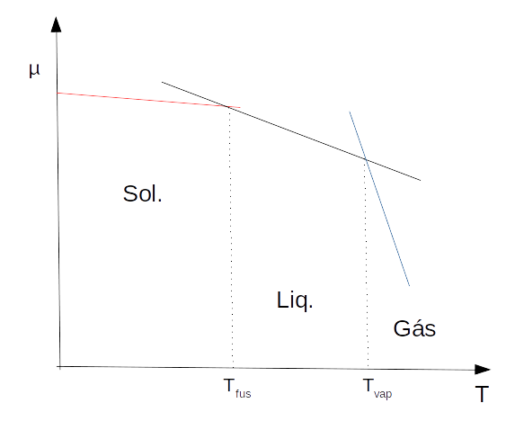
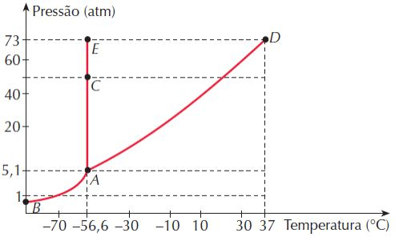
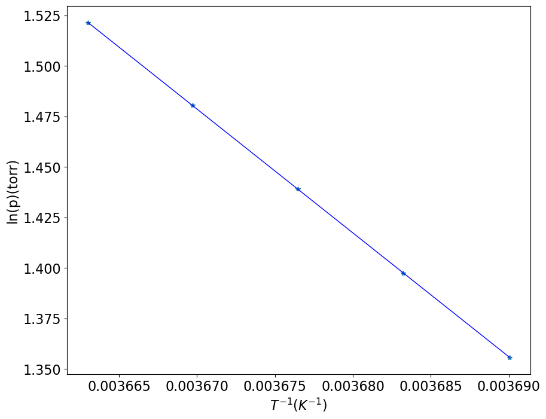
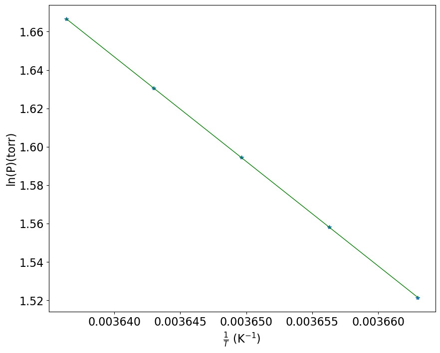
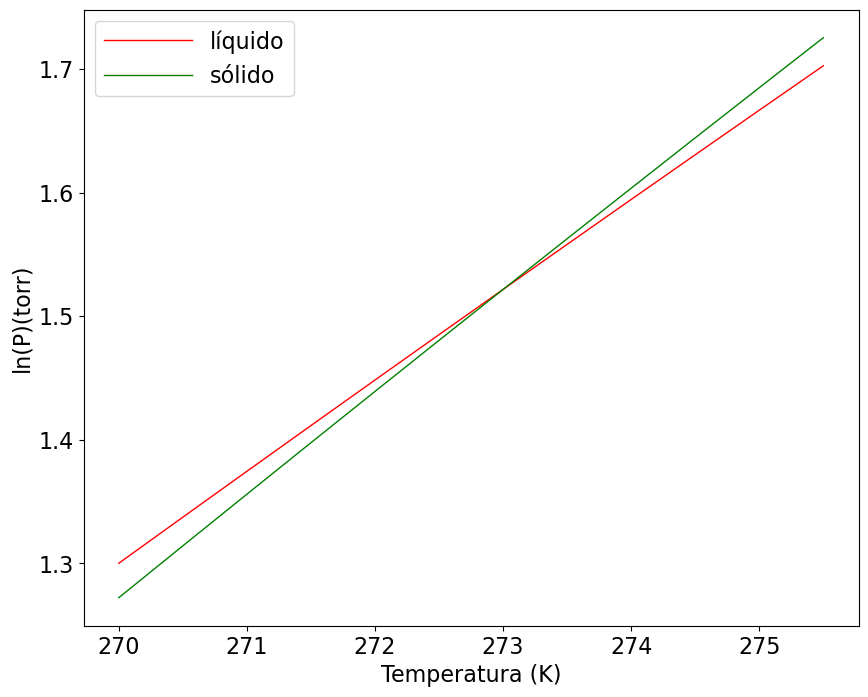

Equilíbrio de fases envolvendo substâncias puras.#
A estabilidade das fases pode ser descrita pela entropia de cada fase:
Como \(S_{m,sol} < S_{m,l} << S_{m,g} \), obtemos o seguinte gráfico:

O gráfico indica a região de estabilidade de cada fase. A interseção das curvas, pontos nos quais o potencial químico deduas fases se igualam, representam as regiões de transição de fase. Por consequência, os valores de temperatura para transição de fase.Outra formas de representarmos o diagrama de fases de uma substância, é por meio de um gráfico de p versus T. Neste gráfico a região delimitada pelos pontos B e E representa a fase sólida. A fase líquida está contida na região delimitada pelos pontos E e D. Enquanto que a fase gás fica abaixo da curva delimitada pelos pontos B e D. As curvas que delimitam cada fase representam as regições transição de fase. A curva BA é a curva de sublimação, a curva AE é a curva de fusão e a curva AD representa o processo de ebulição. Dois pontos especiais podem ser identificados no gráfico: os pontos A e D. O ponto A representa o ponto triplo do diagrama de fases. Nele, as fases sólida, líquida e gás coexistem em equilíbrio. O ponto D define o estado crítico da substância. Acima deste ponto não se pode definir uma região de transição líquido-vapor, havendo assim uma indistinguibilidade das fases líquida e gás. Acima do ponto crítico é dito que a substância se encontra no estado crítico.

O coeficiente angular da curva de p versus T, \( \frac{dp}{dT} \), na região bifásica pode ser calculado pela equação de Clapeyron:
Para mudanças de estado reversíveis podemos fazer \(\Delta S = \frac{\Delta H}{T} \) .
A equação de Clayperon pode ser resolvida para as três regiões bifásicas: sólido-líquido, sólido-vapor, e líquido-vapor. A integração na região de equilíbrio sólido-líquido, considerando um pequeno intervalo de temperaturas e \( \Delta _{fus}H \) como constante neste intervalo, nos leva a equação:
A integração nas regiões de sólido-vapor e líquido-vapor retornam equações similares, sendo o único termo diferente as entalpias de fusão e sublimação:
\( ln(\frac{p_2}{p_1}) = \frac{\Delta _{vap}H}{R} (\frac{1}{T_2} - \frac{1}{T_1}) \) líquido-vapor
\( ln(\frac{p_2}{p_1}) = \frac{\Delta _{sub}H}{R} (\frac{1}{T_2} - \frac{1}{T_1}) \) sólido-vapor
Os exercícios resolvidos mostrarão como usar a equação de Clayperon para estudar o equilíbrio de fases e obter propriedades termodinâmicas de transição de fase. Para a resolução dos exercíos faremos uso das bibliotecas Numpy e Matplolib.# Tudo começa com a importação dos módulos necessários para fazer as contas
import numpy as np
import matplotlib.pyplot as plt
---------------------------------------------------------------------------
ModuleNotFoundError Traceback (most recent call last)
Cell In[1], line 2
1 # Tudo começa com a importação dos módulos necessários para fazer as contas
----> 2 import numpy as np
3 import matplotlib.pyplot as plt
ModuleNotFoundError: No module named 'numpy'
Exercício 1)#
Use os dados abaixo de temperatura-pressão de vapor para determinar \(\Delta_{sub} Hº\), \(\Delta_{vap} Hº\) e \(\Delta_{fus} Hº\) para a água a 0ºC:
Gelo
p/torr |
3.880 |
4.045 |
4.217 |
4.395 |
4.579 |
|
T/ºC |
-2.0 |
-1.5 |
-1.0 |
-0.5 |
0.0 |
Água
p/torr |
4.579 |
4.750 |
4.926 |
5.107 |
5.294 |
|
T/ºC |
0.0 |
0.5 |
1.0 |
1.5 |
2.0 |
Solução:#
De acordo com a integração da equação de Clayperon \( \left ( \ln(\frac{p_2}{p_1} \right) = - \frac{\Delta_{vap} Hº}{R} \times \left ( \frac{1}{T_2}-\frac{1}{T_1} \right )\), um gráfico de ln(p) contra 1/T deve ser linear e apresentar coeficiente angular igual a \(-\frac{\Delta Hº}{R}\). Resolvendo inicialmente para o gelo:
# Definindo os vetores que serão plotados
# Resolvendo para o gelo
p = np.array([ 3.880 , 4.045 , 4.217 , 4.395 , 4.579]) #torr
t_celsius = np.array([ -2.0 , -1.5 , -1.0 , -0.5 , 0.0]) #ºC
T = 273 + t_celsius
lnP = np.log(p)
iT = 1/T
#regressão linear
deg = 1
z = np.polyfit(iT, lnP, deg)
y = np.poly1d(z)
DH_sub = -8.314*z[0] # calculando deltaH de sublimação
print('coeficiente angular = ' + format(z[0] , ' 6.5f'))
print('coeficiente linear = ' + format(z[1] , ' 6.5f'))
print('entalpia de sublimação (J/mol)= ' + format(DH_sub , ' 6.5f'))
coeficiente angular = -6129.91617
coeficiente linear = 23.97549
entalpia de sublimação (J/mol)= 50964.12304
Faremos a construção do gráfico de p versus T para fins didáticos. Desta forma fica mais fácil visualizar que a equação obtida descreve uma reta de ln(p) em função de 1/T.
# Criando os gráficos
# estes dois parâmetros precisam aparecer antes da definição do plot
plt.rcParams.update({'font.size': 16}) #define o tamanho da fonte
plt.figure(figsize=(10,8)) #define as dimensões do gráfico
plt.plot(iT,lnP,'*')
plt.plot(iT,y(iT), color='blue', linewidth=1)
plt.xlabel(r'$T^{-1} (K^{-1} )$')
plt.ylabel('ln(p)(torr)')
plt.show
<function matplotlib.pyplot.show(close=None, block=None)>

# Resolvendo para água
#Definindo os vetores que serão plotados
p = np.array([ 4.579 , 4.750 , 4.926 , 5.107 , 5.294]) #torr
t_celsius = np.array([ 0.0 , 0.5 , 1.0 , 1.5 , 2.0]) #ºC
T = 273 + t_celsius
lnP = np.log(p)
iT = 1/T
#regressão linear
deg = 1
z2 = np.polyfit(iT, lnP, deg)
y1 = np.poly1d(z2)
DH_vap = -8.314*z2[0] # calculando deltaH de vaporização
print('coeficiente angular = ' + format(z2[0] , ' 6.5f'))
print('coeficiente linear = ' + format(z2[1] , ' 6.5f'))
print('entalpia de vaporização (J/mol)= ' + format(DH_vap , ' 6.5f'))
coeficiente angular = -5445.28900
coeficiente linear = 21.46772
entalpia de vaporização (J/mol)= 45272.13274
Novamente faremos a construção do gráfico de p versus T para fins didáticos. Desta forma fica mais fácil visualizar que a equação obtida descreve uma reta de ln(p) em fundção de 1/T.
# Criando os gráficos
# estes dois parâmetros precisam aparecer antes da definição do plot
plt.rcParams.update({'font.size': 16}) #define o tamanho da fonte
plt.figure(figsize=(10,8)) #define as dimensões do gráfico
plt.plot(iT,lnP,'*')
plt.plot(iT,y1(iT), color='green', linewidth=1)
plt.xlabel(r'$\frac{1}{T}$ (K$^{-1})$')
plt.ylabel('ln(P)(torr)')
plt.show
<function matplotlib.pyplot.show(close=None, block=None)>

Sabendo que: \( \Delta_{sub} Hº = \Delta_{vap} Hº + \Delta_{fus} Hº\)
DH_fus = DH_sub - DH_vap
print('entalpia de fusão (J/mol)= ' + format(DH_fus , ' 6.5f'))
entalpia de fusão (J/mol)= 5691.99029
A partir das entalpias obtidas, vamos construir um gráfico onde as equações para o equilíbrio líquido-vapor e sólido-vapor são plotadas em conjunto. O ponto onde as curvas se encontram é a condição de T e p de equilíbrio de fases. Em temperaturas abaixo de 273 K a curva do sólido apresenta menor pressão de vapor, logo, este estado é mais estável nesta faixa de temperaturas. Acima de 273 K, a curva do líquido apresenta menores valores de pressão de vapor, indicando que o líquido é mais estável em temperaturas superiores a 273 K.
#Criando um intervalo de temperaturas que se inicia em 270 K e termina em 276 K.
#O intervalo de valores é 0.5K.
T = np.arange(270,276,0.5) #criando um intervalo de temperaturas
iT = 1/T
# Criando os gráficos
# estes dois parâmetros precisam aparecer antes da definição do plot
plt.rcParams.update({'font.size': 16}) #define o tamanho da fonte
plt.figure(figsize=(10,8)) #define as dimensões do gráfico
#Gráfico do líquido-vapor
plt.plot(T,y1(iT), color='red', linewidth=1,label='líquido')
#Gráfico do sólido-vapor
plt.plot(T,y(iT), color='green', linewidth=1,label='sólido')
plt.xlabel('Temperatura (K)')
plt.ylabel('ln(P)(torr)')
plt.legend(handlelength=4,loc='best')
plt.show
<function matplotlib.pyplot.show(close=None, block=None)>
